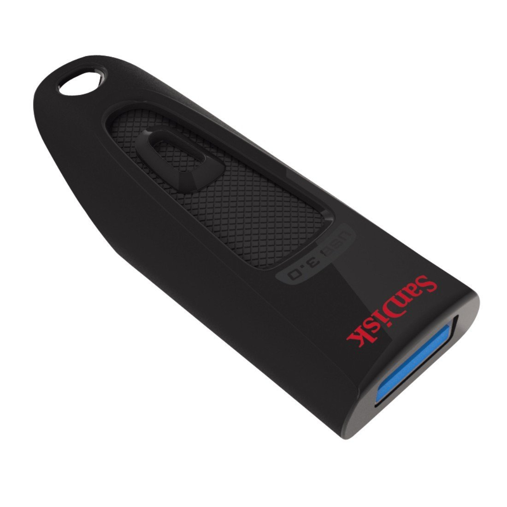

Non comprare questa USB!
Tutti i giorni abbiamo a che fare con una quantità di dati molto elevata, che devono essere trasportati, conidvisi, imagazzinati.
E molto spesso si ricorre all'utilizzo di delle pennette USB, ma non tutte sono valide come pensiamo,
infatti un dispositivo troppo economico potrebbe compromettere l'accesso ai dati, oppure semplicemente non garantire delle
velocità di lettura/scrittura accettabili.
Questo è il caso della nostra Sandisk Ultra USB 3.0
una pendrive molto economica (su amazon al momento della pubblicazione dell'articolo costa circa 13€ per la versione da 32GB),
invece la si può trovare nei negozi fisici ad un prezzo che va dai 15 ai 30€ (per la versione da 32GB).
La USB si presenta bene, l'esterno è fatto di materiali molto economici ma per 12€ non ci si può aspettare troppo

Ma andiamo ad analizzare i problemi che presenta questa USB:
- Scalda anche se non fa nulla!
- La velocità di scrittura è di poco sopra i 30MB/s
- La velcoità di scrittura tende a scendere tantissimo anche dopo alcuni mesi
- Non raggiunge assolutamente la velocità promessa, ovvero 130MB/s in lettura, in scrittura supera anche i 150MB/s
- Tende ad auto bloccarsi in modalità "Sola lettura" molto più facilmente delle altre!
Approfondiamo i sui problemi
- temperatura estremamente alta
- in molti crederanno che la USB si surriscaldi perchè sta scrivendo e/o copiando tantissimi file, beh con questa USB non è così!
dato che è capace di raggiungere i 50+° solo restando attaccata alla porta USB senza eseguire nessuna
operazione su essa, questo problema si presenta sia su porte USB 2.0 che 3.0
- La USB va lenta
- La USB promette una velocità di 130MB/s, purtroppo questa velocità non si riesce a raggiungere neanche da nuova!
la usb infatti ha una velocità di scrittura (sequenziale) che va da 2MB/s fino a massimo 80MB/s (che si vedono molto raramente)
In velocità di scrittura casuale la USB riesce a raggiungere dai 5KB/s fino ai 2MB/s.
- La velocità della pendrive tende a calare con il passare dei giorni
- Appena comprata la USB la si vede andare anche dai 40 fino ad 80MB/s il problema è che
anche dopo alcuni mesi la USB diveta incredibilmente lenta, fino ad arrivare a copiare file addirittura
sotto i 10MB/s (nel mio caso la USB copia a 8MB/s)
- Tende ad auto bloccarsi in modalità sola lettura
- Da qullo che dicono le recensioni su amazon questa USB tende anche a bloccarsi molto facilmente in modalità "sola lettura" (se non sai cosa è la modalità sola lettura dai
un piccolo sguardo a questo articolo) il che non è un bene, si presume che questo
collassamento delle celle di memoria della USB sia dovuto alla scarissima dissipazione di essa che tende a far arrivare
l'interno della USB anche a 70°, ed in più anche della scarsissima qualità delle celle stesse. (Nel mio caso la USB
non è ancora morta, ma sta dando sintomi di morte, in caso la USB muoia aggiornerò l'articolo)
Conclusione
La USB non è assolutamente una delle migliori dato che spendendo poche decine di euro in più si possono comprare
delle pendrive molto più valide e durature nel tempo, questa usb deve essere l'ultima delle vostre scelte,
e tra tutte le capacità consiglio quella da 16GB che è (secondo me) quella che ha più senso acquistare
Anche perchè con capacità maggiori si verebbe irrimediabilmente frenati dalla pessima velocità di scrittura, che impiega anche più di
40 minuti per la copia di dei file con un peso complessivo di 16GB.